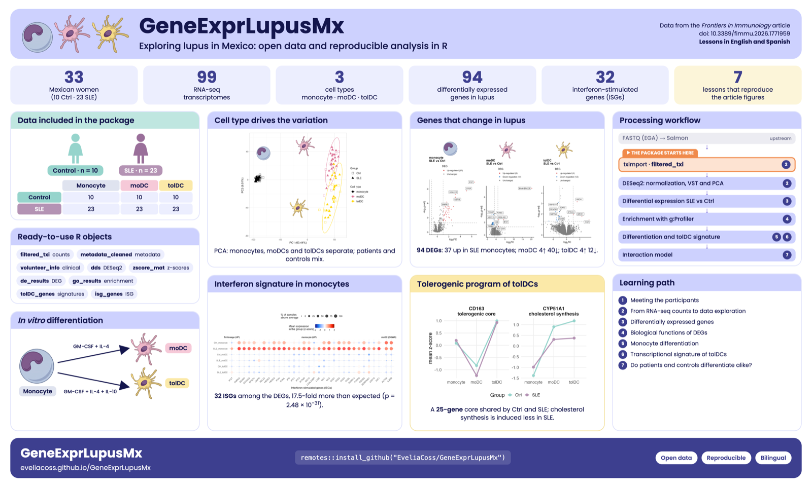

Explorando el lupus en México: datos abiertos y análisis reproducibles en R
GeneExprLupusMx es un paquete de datos en R, bilingüe y reproducible, que integra perfiles transcriptómicos y metadatos clínicos de mujeres mexicanas con lupus eritematoso sistémico (SLE) y controles sanas. Incluye la expresión génica de monocitos, células dendríticas derivadas de monocitos (moDC) y células dendríticas tolerogénicas (tolDC) de 33 voluntarias (10 controles y 23 pacientes; 99 muestras), junto con lecciones que reproducen, paso a paso, las figuras del artículo original.
- Uso educativo: recurso didáctico en bioinformática, inmunología y ciencias biomédicas.
-
Análisis reproducibles: datos, checkpoints y scripts (
data-raw/) para replicar las figuras y análisis del estudio. - Ciencia abierta: hace visibles y reutilizables datos biomédicos generados en América Latina.
Exploring lupus in Mexico: open data and reproducible analysis in R
GeneExprLupusMx is a bilingual, reproducible R data package that integrates transcriptomic profiles and clinical metadata from Mexican women with systemic lupus erythematosus (SLE) and healthy controls. It includes gene expression from monocytes, monocyte-derived dendritic cells (moDCs) and tolerogenic dendritic cells (tolDCs) of 33 volunteers (10 controls and 23 patients; 99 samples), together with lessons that reproduce, step by step, the figures of the original article.
- Educational use: a teaching resource in bioinformatics, immunology and biomedical sciences.
-
Reproducible analyses: data, checkpoints and scripts (
data-raw/) to replicate the figures and analyses of the study. - Open science: makes biomedical data generated in Latin America visible and reusable.

Instalación / Installation
# install.packages("remotes")
remotes::install_github("EveliaCoss/GeneExprLupusMx")Algunas lecciones usan paquetes de Bioconductor / Some lessons use Bioconductor packages:
BiocManager::install(c("DESeq2", "ComplexHeatmap"))Lecciones / Lessons
Datos / Data
library(GeneExprLupusMx)
dim(filtered_txi$counts) # genes x muestras / genes x samples
#> [1] 21718 99
table(metadata_cleaned$Group, metadata_cleaned$Cell_type)
#>
#> moDC monocyte tolDC
#> Ctrl 10 10 10
#> SLE 23 23 23Los datos crudos de secuenciación (FASTQ) están en el European Genome-phenome Archive (EGA) con acceso controlado; los identificadores se encuentran en la Tabla suplementaria 2 del artículo. / The raw sequencing data (FASTQ) are deposited in the European Genome-phenome Archive (EGA) under controlled access; the identifiers are listed in Supplementary Table 2 of the article.
Origen de los datos / Data sources
Los datos de este paquete provienen del artículo original, del análisis depositado en Zenodo y del repositorio de código NeuroGenomicsMX/SLE_Transcriptomic_analysis_tolerogenic (por ejemplo, las figuras de la Figura 2). Aquí se reorganizaron en objetos de R listos para usar; los scripts de data-raw/ documentan cada paso. / The data in this package come from the original article, the analysis deposited in Zenodo and the code repository NeuroGenomicsMX/SLE_Transcriptomic_analysis_tolerogenic (for example, the Figure 2 figures). Here they were reorganized into ready-to-use R objects; the data-raw/ scripts document each step.
Cómo citar / How to cite
Hay dos citas: una para el paquete y otra para los datos; si usas este recurso, por favor incluye ambas. / There are two citations: one for the package and one for the data; if you use this resource, please include both.
1) Cómo citar el paquete / How to cite the package
Coss E (2026) GeneExprLupusMx: Datos transcriptómicos de lupus en mujeres mexicanas con lecciones de aprendizaje. Paquete de R. https://github.com/EveliaCoss/GeneExprLupusMx doi: 10.5281/zenodo.23751369.
Este DOI siempre apunta a la versión más reciente; en Zenodo encontrarás el DOI de cada versión. / This DOI always points to the latest version; on Zenodo you can find the DOI of each version.
2) Cómo citar los datos / How to cite the data
Hernández-Ledesma AL, Coss-Navarrete EL, et al (2026) Gene expression profiling of dendritic cell tolerance dysfunction in women with systemic lupus erythematosus. Front. Immunol. 17:1771959. doi: 10.3389/fimmu.2026.1771959.
Coss-Navarrete EL, Hernández-Ledesma AL, et al (2025) Analysis of gene expression profiles during tolerance induction in dendritic cells from women with Systemic Lupus Erythematosus [Data set]. Zenodo. doi: 10.5281/zenodo.17742206.
Agradecimientos / Acknowledgements
Inspiración. Este paquete se inspira en palmerpenguins (Allison Horst, Alison Hill y Kristen Gorman), que mostró cómo un paquete de datos abiertos puede convertirse en un recurso educativo para aprender R, y en karel (Marcos Prunello), que demuestra el valor de una documentación bilingüe, en español e inglés, para acercar la programación a más personas. / This package is inspired by palmerpenguins (Allison Horst, Alison Hill and Kristen Gorman), which showed how an open data package can become an educational resource for learning R, and by karel (Marcos Prunello), which demonstrates the value of bilingual documentation, in Spanish and English, to bring programming to more people.
rOpenSci. Agradezco a rOpenSci por seleccionarme como campeona de su programa Champions y por acompañarme en la creación de herramientas abiertas, interactivas y bilingües como esta, pensadas para compartirse con todo el mundo. / I thank rOpenSci for selecting me as a champion of its Champions Program and for supporting me in creating open, interactive and bilingual tools like this one, meant to be shared with the world.
Software libre. Gracias a las autoras, autores y comunidades que desarrollan y mantienen los paquetes de libre uso que hacen posibles las lecciones. / Thanks to the authors and communities who develop and maintain the free and open-source packages that make the lessons possible:
- Bioconductor: DESeq2, tximport, SummarizedExperiment, ComplexHeatmap, rrvgo y / and org.Hs.eg.db.
- Análisis y visualización / Analysis and visualization: tidyverse (dplyr, ggplot2, tidyr, purrr…), gprofiler2, circlize, cowplot, ggrepel, ggh4x, scales, readxl y / and stringi.
- Desarrollo y documentación / Development and documentation: knitr, rmarkdown, pkgdown, roxygen2, usethis, testthat, remotes y / and BiocManager.
También agradecemos a los recursos abiertos g:Profiler, Gene Ontology y Reactome, y a las voluntarias que participaron en el estudio. / We also thank the open resources g:Profiler, Gene Ontology and Reactome, and the volunteers who took part in the study.
Licencia / License
El código del paquete se distribuye bajo la licencia MIT. Los datos originales provienen de las fuentes indicadas en Origen de los datos (el registro de Zenodo usa la licencia CC BY 4.0); si los usas, cita el artículo y el registro de Zenodo. / The package code is released under the MIT license. The original data come from the sources listed in Data sources (the Zenodo record uses the CC BY 4.0 license); if you use them, please cite the article and the Zenodo record.